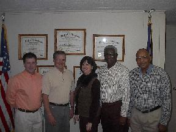
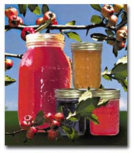

- The official website of the town of Marion
Home
Government
Area Services
Visitors
Contact Us
Gallery

Board of Aldermen
From L to R: Wade Miller, Bubba Hoggatt, Ann Miller, Ralph Holley, Johnny B. Gilliam
Description of picture 2

Description of Picture 3
Go to page:
1
2
3 4
Website created by the Town of Marion (2007)